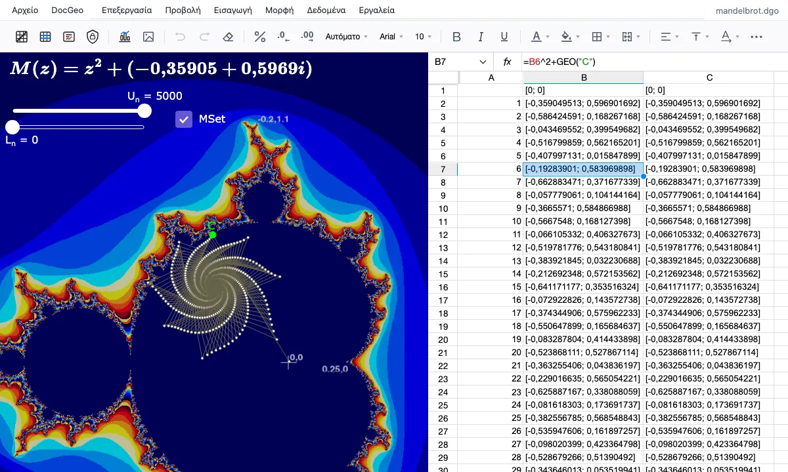

Το υπολογιστικό φύλλο
Μια καρτέλα του DocGeo μπορεί να περιέχει ένα φύλλο του DocCells, του υπολογιστικού φύλλου του DocTools: δίπλα στο σχήμα ή μόνο του στη δική του καρτέλα. Το σχήμα και τα κελιά διαβάζουν το ένα το άλλο, ζωντανά.

Στο παραπάνω παράδειγμα:
-
τα κελιά B1 έως B3 διαβάζουν τα μήκη των πλευρών a, b και c
του τριγώνου:
=GEO("a")…· - το B4 τα αθροίζει:
=B1+B2+B3· -
το σχήμα ξαναδιαβάζει αυτό το άθροισμα με τη γραμμή
s = Φύλλο1!B4.
Όταν σύρετε το A, το B ή το C, τα κελιά και το
s ακολουθούν κατά την κίνηση.
Προσθήκη υπολογιστικού φύλλου
| Ενέργεια | Πώς |
|---|---|
| Δίπλα στο σχήμα | Αρχείο › Προβολή › Νέα προβολή υπολογιστικού φύλλου: μία στήλη ακόμη, δεξιά, με ένα κενό φύλλο· οι στήλες παίρνουν το ίδιο πλάτος (πολλές προβολές) |
| Στη δική του καρτέλα | Αρχείο › Νέα καρτέλα υπολογιστικού φύλλου: μια καρτέλα «Υπολογιστικό φύλλο 1», «Υπολογιστικό φύλλο 2»…, που περιέχει μόνο ένα φύλλο (βιβλία εργασίας) |
| Αλλαγή μεγέθους, μετακίνηση | σύρετε το διαχωριστικό των στηλών· Αρχείο › Προβολή › Μετακίνηση προβολής αριστερά ή δεξιά, όταν η προβολή υπολογιστικού φύλλου είναι ενεργή |
| Διαγραφή | Αρχείο › Προβολή › Διαγραφή της προβολής υπολογιστικού φύλλου: η προβολή και τα κελιά της εξαφανίζονται, το σχήμα ξαναπαίρνει τη θέση. Μια καρτέλα υπολογιστικού φύλλου διαγράφεται όπως κάθε καρτέλα. |
- Μια καρτέλα έχει το πολύ μία προβολή υπολογιστικού φύλλου: η Νέα προβολή υπολογιστικού φύλλου είναι απενεργοποιημένη όταν υπάρχει ήδη μία.
- Μια προβολή υπολογιστικού φύλλου δείχνει ένα μόνο φύλλο, με όνομα «Φύλλο1», χωρίς καρτέλες φύλλων. Για να δουλέψετε με πολλά φύλλα, δημιουργήστε πολλές καρτέλες υπολογιστικού φύλλου, που διαβάζουν η μία την άλλη (δείτε παρακάτω).
- Η προσθήκη ή η διαγραφή μιας προβολής υπολογιστικού φύλλου αναιρείται, όπως οι άλλες ενέργειες στις προβολές.
Τα μενού και τα κουμπιά του υπολογιστικού φύλλου
Ένα κλικ ή ένα πάτημα πλήκτρου στα κελιά κάνει ενεργή την προβολή υπολογιστικού φύλλου. Οι γραμμές του DocGeo δίνουν τότε τη θέση τους σε εκείνες του υπολογιστικού φύλλου, στο ίδιο ύψος: τίποτα δεν μετακινείται από κάτω.
- Η γραμμή μενού κρατά το Αρχείο, ακολουθούμενο από το μενού DocGeo και έπειτα τα μενού του υπολογιστικού φύλλου.
- Η γραμμή κουμπιών του υπολογιστικού φύλλου (μορφή αριθμών, γραμματοσειρά, έντονα, χρώματα, περιγράμματα, στοίχιση…) αντικαθιστά τη γραμμή ενεργειών του DocGeo.
- Το μενού DocGeo προσφέρει ό,τι παραμένει χρήσιμο: Ιστορικό της κατασκευής, Παλέτα εργαλείων, Ιδιότητες και το Εγχειρίδιο χρήσης.
- Επιστρέφετε στις γραμμές του DocGeo με ένα κλικ στο σχήμα ή στο πλαίσιο «Κατασκευή», γράφοντας εκεί μια γραμμή ή αλλάζοντας καρτέλα. Σε μια καρτέλα υπολογιστικού φύλλου, οι γραμμές του υπολογιστικού φύλλου παραμένουν.
- Ένα παράθυρο διαλόγου του υπολογιστικού φύλλου (μορφοποίηση υπό όρους, μορφή αριθμών…) καλύπτει με πέπλο όλο το παράθυρο του DocGeo μέχρι να κλείσει.
Το πλαίσιο «Κατασκευή» παραμένει διαθέσιμο σε μια καρτέλα υπολογιστικού φύλλου (DocGeo › Ιστορικό της κατασκευής): ένα αντικείμενο που γράφεται εκεί υπολογίζεται χωρίς να σχεδιάζεται, και τα κελιά αυτής της καρτέλας μπορούν να το διαβάσουν.
Όταν το DocGeo είναι ενσωματωμένο σε άλλη σελίδα, όπως το DocTools, δεν έχει γραμμή μενού: το υπολογιστικό φύλλο κρατά τις γραμμές του στην κορυφή της στήλης του.
Το σχήμα διαβάζει τα κελιά
Ένας τύπος του σχήματος ορίζει ένα κελί με το όνομα του φύλλου, ένα θαυμαστικό και τη διεύθυνση του κελιού, όπως σε ένα υπολογιστικό φύλλο.
| Γραφή | Τιμή |
|---|---|
Φύλλο1!B3 |
το κελί B3 |
Φύλλο1!B2:B21 |
μια περιοχή μίας γραμμής ή μίας στήλης: μια λίστα τιμών |
Φύλλο1!A1:C3 |
ένα ορθογώνιο: μια λίστα γραμμών, καθεμία μια λίστα |
'Υπολογιστικό φύλλο 1'!Φύλλο1!B3
|
το κελί B3 του φύλλου άλλης καρτέλας |
A = (Φύλλο1!B1, Φύλλο1!B2)
r = Φύλλο1!B3
L = Φύλλο1!A1:A10-
Η διεύθυνση γράφεται με γράμματα και μετά ψηφία
(
B3,AA12), χωρίς$. -
Ένας αριθμός, ένα κείμενο ή μια λογική τιμή διαβάζεται ως
έχει· μια ημερομηνία διαβάζεται ως αριθμός. Ένα κενό κελί ή
ένα κελί με σφάλμα (
#DIV/0!…) δίνει απροσδιόριστη τιμή: το αντικείμενο που το διαβάζει δεν σχεδιάζεται. - Μόλις αλλάξει ένα κελί, με μια καταχώριση ή με τον υπολογισμό του φύλλου, τα αντικείμενα που το διαβάζουν υπολογίζονται και σχεδιάζονται ξανά.
- Μια αναφορά είναι μόνο μέρος ενός τύπου: δεν δημιουργεί κανένα αντικείμενο. Ένα σημείο που διαβάζεται από τα κελιά, όπως το A παραπάνω, είναι υπολογισμένο: δεν σύρεται με το ποντίκι. Για να το μετακινήσετε, αλλάξτε τα κελιά.
Τα κελιά άλλης καρτέλας
Πρώτα μπαίνει το όνομα της καρτέλας, σε απλά εισαγωγικά αν
περιέχει κενό ή σύμβολο, όπως για την
ανάγνωση άλλης καρτέλας: 'Υπολογιστικό φύλλο 1'!Φύλλο1!B3. Τα κελιά της
διαβάζονται όπως είχαν υπολογιστεί όταν φύγατε από αυτή την
καρτέλα.
Τα κελιά διαβάζουν το σχήμα: GEO
Σε ένα κελί, η συνάρτηση GEO διαβάζει την τιμή ενός
αντικειμένου του σχήματος, που ορίζεται με το όνομά του σε
εισαγωγικά.
=GEO("c")
=GEO("'Σχήμα 1'!c")
=2*GEO("r")+1- Η τιμή είναι αυτή που θα διάβαζε ένας τύπος του σχήματος ονομάζοντας το αντικείμενο: μήκος ευθύγραμμου τμήματος, τιμή έκφρασης ή δρομέα, κείμενο, κατάσταση πλαισίου επιλογής… Ακολουθεί το σχήμα όσο το χειρίζεστε.
-
Ένα σημείο ή μια λίστα δεν διαβάζονται: δημιουργήστε πρώτα
μια έκφραση, για παράδειγμα
xA = x(A), και μετά=GEO("xA"). -
Ένα άγνωστο ή απροσδιόριστο αντικείμενο, ή ένα που δεν είναι
ούτε αριθμός, ούτε κείμενο, ούτε λογική τιμή, δίνει
#N/A. Το όνομα πρέπει να είναι γραμμένο στον τύπο: το=GEO(A1)δίνει#VALUE!. -
Το
GEO("'Σχήμα 1'!c")διαβάζει το αντικείμενο c άλλης καρτέλας: έτσι μια καρτέλα υπολογιστικού φύλλου διαβάζει ένα σχήμα. -
Η
GEOέχει το ίδιο όνομα σε όλες τις γλώσσες. Υπάρχει μόνο στο DocGeo: στο DocCells μόνο του, δίνει#N/A.
Κυκλική αναφορά
Ένα αντικείμενο που διαβάζεται από τη GEO δεν
μπορεί να εξαρτάται από ένα κελί που εξαρτάται από αυτό. Αν το
A1 περιέχει =GEO("m")+1, ο
επαναπροσδιορισμός του m με τη γραμμή
m = Φύλλο1!A1 απορρίπτεται: «Κυκλική αναφορά:
Φύλλο1!A1».
Ομοίως, ένας τύπος κελιού που θα έκλεινε έναν κύκλο με το σχήμα ακυρώνεται με αυτό το μήνυμα, και τα κελιά ξαναπαίρνουν το προηγούμενο περιεχόμενό τους. Σε ένα αρχείο που περιέχει παρ’ όλα αυτά έναν κύκλο, η ανάγνωση που τον κλείνει είναι απροσδιόριστη.
Αναίρεση και αποθήκευση
- Τα κελιά έχουν τη δική τους αναίρεση: Ctrl Z στα κελιά, ή τα μενού του υπολογιστικού φύλλου. Τα κουμπιά του DocGeo δεν αναιρούν μια καταχώριση στο υπολογιστικό φύλλο.
-
Τα κελιά, οι τύποι και η μορφοποίησή τους αποθηκεύονται με
το σχήμα, στο ίδιο αρχείο
.dgo. Το Ctrl S στα κελιά, ή το Αρχείο › Αποθήκευση, τα αποθηκεύει όλα.
Για τους μαθητές
Ο αναγνώστης του DocGeo, όπως ένα σχήμα ενσωματωμένο σε ιστοσελίδα, δείχνει το φύλλο χωρίς τα μενού και τα κουμπιά του, με τη γραμμή τύπων του.
- Ο μαθητής μπορεί να γράφει στα κελιά, όπως σε ένα πεδίο εισαγωγής: το σχήμα ακολουθεί.
- Το κουμπί επαναφοράς δίνει πίσω τα κελιά όπως είχαν αποθηκευτεί.
- Αυτές οι καταχωρίσεις δεν αποτελούν μέρος της απάντησης του μαθητή που κρατά μια σελίδα που ενσωματώνει το σχήμα: μόνο τα αντικείμενα του σχήματος.
Το υπολογιστικό φύλλο είναι ξεχωριστή εφαρμογή, που φορτώνεται
μόνο αν η καρτέλα που εμφανίζεται έχει ένα. Σε έναν ιστότοπο που
φιλοξενεί δικό του αντίγραφο του DocGeo, ο φάκελος
doccells πρέπει να δημοσιεύεται δίπλα στον φάκελο
του DocGeo· αλλιώς η προβολή υπολογιστικού φύλλου δείχνει «⚠
DocCells», και το υπόλοιπο σχήμα λειτουργεί.